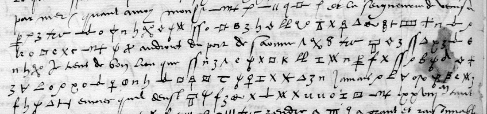

. Wikimedia Commons, public domain.")

At a glanceExisting decipherment · complete
- The letter
- Jean du Bellay, bishop of Bayonne and French ambassador in London, to Anne de Montmorency, 28 October 1528. Mostly clear French, with runs of cipher.
- Where
- Bibliothèque nationale de France, fr. 3077 no. 23, pp. 145–147 (DECODE R4254, listed there with no decipherment); a copy is Clairambault 328 f. 291 (DECODE R2287). Catalogue item 4, where the BnF notice gives no year.
- The cipher
- Du Bellay’s first cipher: drawn signs, with meaningless sign groups and uncoded phrases shut between two fixed marks that cancel them. It is not the cipher of his letters of 1529.
- How it was deciphered
- V.-L. Bourrilly and P. de Vaissière recovered the lost key and printed the letter in clear in 1905. George Lasry solved the cipher again in 2022. Here the letter was dated and matched to the edition; no key was applied.
- What it says
- Du Bellay expects no peace from the Emperor’s envoys if the divorce goes ahead: the Queen has said privately that the Emperor would then never rest until he had ruined the King of England.
- Credit
- Bourrilly and de Vaissière (key and text, 1905); George Lasry (the cipher solved again, 2022); Satoshi Tomokiyo (who published Lasry’s key).
Until 14 October 2026 this letter shared a page with du Bellay’s letters of 1529, which are in his cipher of that year, a different cipher, with their own page.
01 The letter
BnF fr. 3077 binds du Bellay’s despatches to Montmorency by day and month across several years, and the notice for no. 23 reads only “avec chiffre, XXVIIIe d’octobre”. Its content dates it to 1528, the first year of du Bellay’s embassy: Campeggio’s reception by Henry VIII, the two legates’ first interview with Queen Catherine, Montpezat’s coming. Bourrilly and de Vaissière print it as no. 156 of Ambassades en Angleterre de Jean du Bellay (1905), pp. 430–434; it is also in Le Grand’s Histoire du divorce III (1688) pp. 188–192 and calendared in Letters and Papers IV 4879. The clear text opens Monseigneur, je croy que me pensez si peu paresseux es affaires du Roy.

02 The cipher
Bourrilly’s editors describe it in a note (p. 432): it is the first cipher du Bellay used, and only two of his letters in it were known to them, this one and one of 28 May 1529. They found its key, which was lost, but could not identify with certainty the persons meant by some signs that occur only once. To make it harder, the ciphered text is broken at intervals by groups of meaningless signs, or by uncoded phrases about other business, each shut between two marks that act as brackets and cancel what they hold. They did not print their key.
George Lasry solved the cipher again in 2022, on Clairambault 329 f. 9, a letter annotated as du Bellay’s. Satoshi Tomokiyo, who published the solution on Cryptiana (“Bayonne’s Cipher (1528–1529)”), notes that the same key fits Clairambault 328 f. 291, the copy of this letter, and that it differs from the cipher of du Bellay’s 1529 letters. That is why DECODE’s note on R2287 says Tomokiyo’s 1529 table does not fit.
03 What the cipher says
From Bourrilly’s text. After a clear sentence on the Emperor’s two envoys with offers of peace, one by land and one by sea, du Bellay writes that if the marriage goes ahead he does not expect peace through them. He has it from a good place that the Queen said in private that, if it does, the Emperor will never stop until he has ruined the King of England, even if he had to give the King of France back his sons on reasonable terms to do it. He then wonders whether something could be worked up through the Duke of Gueldres or Margaret of Austria, and warns that the Pope is not to be trusted, leaning as he does on the English.
04 What remains open
- Nothing in the text: the 1905 edition prints the cipher passages in full.
- Here, no transcription was made and no key applied, so this page has no sign-by-sign replay. Neither key is printed: Bourrilly’s is lost again, Lasry’s is an image on Cryptiana. The letter of 28 May 1529 in the same cipher and Clairambault 329 f. 9 were not opened.
Full texts
The transcription and the decryption of every document on this page, so that the reading can be used and checked. Short files are shown here; all are in the repository.
28 Oct 1528, fr. 3077 no. 23 (Bourrilly and de Vaissière 1905, no. 156)
Jean du Bellay to Montmorency from London, 28 Oct 1528, in his first cipher: the clear text covers money he cannot get, Montpezat's coming and Campeggio's reception by Henry VIII; the cipher runs say that, if the divorce and remarriage go ahead, the Queen has said the Emperor will never stop until he has ruined the King of England, and suggest working through the Duke of Gueldres or Margaret of Austria while not trusting the Pope.
Decryption: 430
05 Sources
- Bibliothèque nationale de France, fr. 3077 (Gallica btv1b90599292, views 143–145); DECODE R4254 and R2287 (Clairambault 328 f. 291).
- V.-L. Bourrilly and P. de Vaissière (eds.), Ambassades en Angleterre de Jean du Bellay (Paris, 1905), no. 156, pp. 430–434 (archive.org ambassadesenangl00dube).
- Satoshi Tomokiyo, “George Lasry’s solutions”, Cryptiana, “Bayonne’s Cipher (1528-1529)”.
- J. S. Brewer (ed.), Letters and Papers, Henry VIII, vol. IV, no. 4879; Joachim Le Grand, Histoire du divorce de Henry VIII, t. III (1688), pp. 188–192.
Notes: targets/dubellay1528/ in the repository.
Cite this page
Daniel Bourdeau, “Jean du Bellay to Montmorency, London, 28 October 1528”, Cyphersolver, posted 15 October 2026, https://cyphersolver.com/dubellay1528.html.